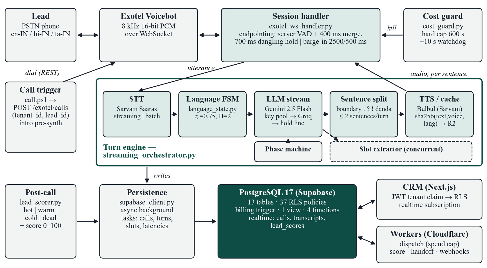
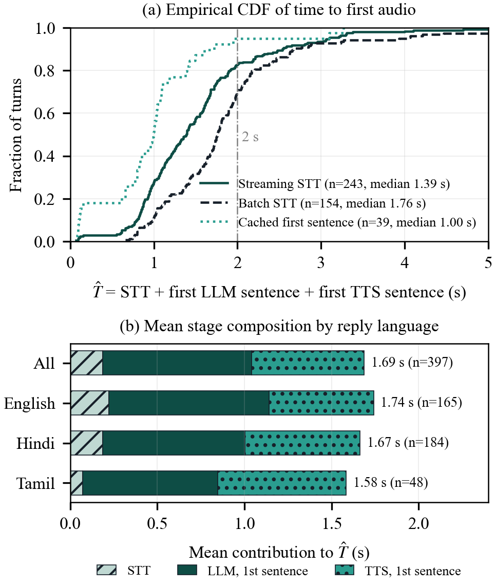
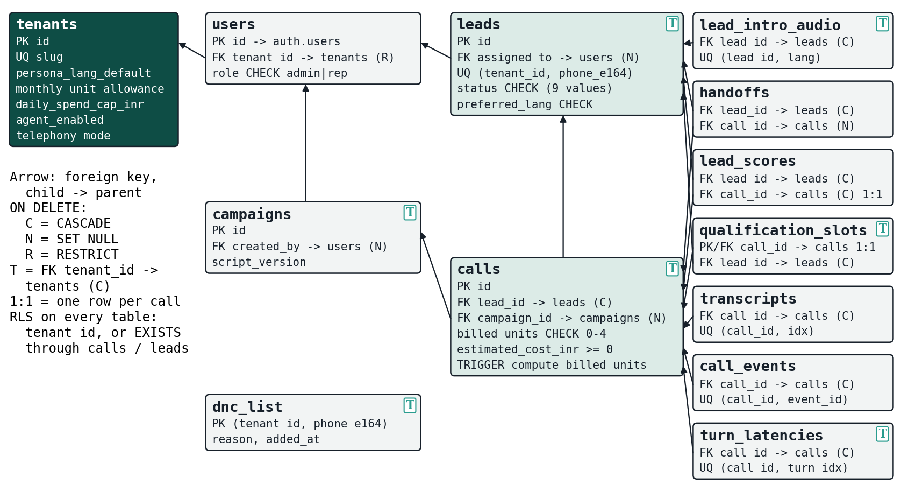

Abstract—Outbound qualification of sales leads in India requires an agent that converses in English, Hindi and Tamil over narrowband telephony, tolerates code-mixing, and records every interaction under strict tenant separation. Cascaded speech pipelines meet these requirements poorly: response delay accumulates across recognition, generation and synthesis, and per-utterance language identification flips the conversation language on short or misrecognised utterances. This paper presents ASVA, a streaming voice agent that pipelines language-model output into sentence-level speech synthesis while a concurrent extractor fills eight qualification slots, controls the reply language with a hysteresis state machine, serves recurrent phrases from a content-addressed audio cache, and persists calls in a PostgreSQL schema whose tenant isolation and duration billing are enforced by row-level security and triggers. Over 421 logged turns from 52 pilot calls, the median time from end of speech to first agent audio was 1.57 s, and 77.6% of turns were answered within 2 s. Turns using server-side streaming recognition exhibited a 21% lower median delay than batch recognition, and turns served from the phrase cache a 39% lower median than synthesised turns. First-sentence generation accounted for 50.6% of the mean delay, identifying the language model as the dominant bottleneck; a controlled benchmark of three hosted models and three synthesis services quantifies the remaining headroom. Execution-based verification of the schema exposed three latent defects that would have rejected long calls, halted dispatch and nullified tenant claims. The results indicate that sub-two-second multilingual telephony agents are attainable with commodity cloud services when latency, language control and data integrity are treated as first-class design constraints.
Index Terms—spoken dialogue systems, speech recognition, code-switching, large language models, multi-tenant databases, latency
Lead lists purchased by small brokers and business-to-business sellers decay quickly: a lead that is not contacted within minutes is frequently lost to a competitor. In India the contact must additionally happen in the lead’s preferred language, which in a single metropolitan market such as Chennai spans English, Hindi and Tamil, often mixed within one sentence. Automating this first conversation with a voice agent is attractive, but three engineering constraints dominate its feasibility.
First, conversational turn-taking is fast. Cross-linguistic studies place the modal gap between turns near 200 ms [1], and long silences are attributed to inattention or to a machine [2]. A cascaded agent—automatic speech recognition (ASR), a large language model (LLM) and text-to-speech (TTS)—incurs a network round trip to each service per turn, over 8 kHz telephone audio that degrades recognition. Second, per-utterance language identification is unreliable precisely on the utterances most common in calls: one-word backchannels such as haan or ok, and English speech transcribed in an Indic script by a streaming recogniser. A policy of replying in the detected language consequently switches language mid-call. Third, a commercial deployment serves many customer organisations whose leads, transcripts and billing must be isolated; application-level filtering alone leaves isolation dependent on every query being written correctly.
Existing work addresses these problems separately: end-of-query detection and turn-taking models reduce endpointing delay [2], [3]; multilingual recognisers and Indic speech benchmarks improve recognition [4]–[6]; code-switching research characterises mixed-language speech [7]; and multi-tenant database designs address shared schemas [8]. Few published systems combine them into an operating telephony agent and report per-stage latency from real calls in Indian languages.
The principal contributions of this work are as follows:

| Paradigm | Generation-to-TTS | Language control | Structured extraction | Tenant isolation |
|---|---|---|---|---|
| Sequential cascade (ASR, LLM, TTS) | sequential | follow utterance LID | post-call only | application level |
| Endpointing-optimised pipelines [2], [3] | partially streamed | not addressed | not addressed | not addressed |
| Multilingual ASR/TTS models [4], [5], [10] | n/a | model-level LID | n/a | n/a |
| This work | sentence-pipelined | hysteresis state machine | concurrent, confidence-merged | row-level security and triggers |
Section II reviews related work. Section III formalises the architecture and its algorithms. Section IV describes the implementation and evaluation. Section V discusses scalability and limitations, and Section VI concludes.
Stivers et al. [1] measured turn transitions across ten languages and found a shared preference for minimal gaps. Skantze [2] surveys turn-taking models for conversational systems and identifies endpointing and response generation as the primary sources of machine delay. Shannon et al. [3] replace silence timeouts with a learned end-of-query detector in streaming ASR, reducing endpoint latency without increasing cut-offs. Dean and Barroso [9] show that tail latency governs perceived responsiveness in multi-service systems. The present work adopts server-side endpointing in the spirit of [3], adds conversational merge and dangling-fragment holds, attacks the generation component with sentence pipelining, and reports tail percentiles following [9].
Weakly supervised multilingual ASR [4] and massively multilingual speech models [5] extend recognition to many Indian languages, while IndicSUPERB [6] benchmarks Indic speech tasks. Kumar et al. [10] build TTS for Indian languages at scale, and conditional variational TTS [11] underlies many modern neural voices. Sitaram et al. [7] survey code-switched speech processing and note that utterance-level language identification is unreliable for short and mixed utterances. Rather than improving language identification itself, the present work treats its output as noisy evidence and controls the reply language with a hysteresis state machine.
General-purpose LLMs such as Gemini [12] enable open-domain dialogue but introduce hallucination risk [13], which motivates constrained outputs and structured extraction. Predictive lead scoring has been studied with conventional classifiers over CRM features [14]; here qualification is performed conversationally and scored from the transcript. Aulbach et al. [8] compare schema-mapping techniques for multi-tenant databases; the present design uses a shared schema with PostgreSQL row-level security [15] so that isolation is enforced by the database engine. Open-source frameworks such as Pipecat [16] provide pipeline primitives on which the implementation builds. Table I contrasts the design properties of these paradigms.
The system comprises (i) a telephony layer that dials the lead and exchanges 8 kHz 16-bit PCM over a WebSocket; (ii) a session handler that performs endpointing, barge-in detection and call-context resolution; (iii) a turn engine that runs recognition, normalisation, language control, streaming generation and sentence synthesis; (iv) dialogue controllers, namely a language state machine and a monotone phase machine; (v) a concurrent slot extractor and a post-call scorer; and (vi) a PostgreSQL persistence layer with row-level security, accessed by the agent, by serverless workers (dispatch, scoring, hand-off) and by a CRM that receives realtime updates (Fig. 1).
For turn k, the perceived response delay is the time to first audio
where the terms denote endpointing, recognition, pre-processing, generation of the first sentence, synthesis of the first sentence and transmission. The instrumented quantity is
A sequential cascade presents for an m-sentence reply; sentence pipelining reduces the perceived component to because sentence i ≥ 2 is produced during playback of sentence i−1. With a cap m ≤ 2, turn wall time is bounded by two sentences of playback. When the recogniser has finalised the transcript at the endpoint, ΔSTT ≈ 0.
In streaming mode the recogniser’s voice-activity model emits a final segment; the turn is held for a grace window g = 400 ms, extended while speech activity is reported, and a segment ending in a dangling fragment is held an additional h = 700 ms and merged with its continuation. In fallback mode, 100 ms frames with peak amplitude below 300 are silent and a turn closes after s = 750 ms of silence, with a minimum utterance of 400 ms and a maximum of 8 s. Barge-in flushes queued agent audio when input peak amplitude exceeds 2500 for 500 ms.
Let ℒ = {en, hi, ta} and let an utterance be u = (λ, c, w, σ, x): recogniser label, confidence, word count, detected script and text. The state is (ℓ, p, n): current language, pending language and pending count. With threshold τc = 0.75 and hysteresis H = 2,
where n′ is the pending count after the update (n′ = n+1 if the candidate equals p, otherwise n′ = 1 and p is reset to the candidate). Code-mixed utterances never switch ℓ; they only inform the response hint. On a switch, a bridge phrase for the pair (ℓ, ℓ′) is spoken. The machine trades a delay of at most H−1 turns for genuine, unrequested switches against robustness to single misrecognised or backchannel utterances.
The phase φ(t) is monotone non-decreasing in elapsed time with boundaries at 8, 35, 70, 130 and 140 s (greeting, connect, discover, qualify, close), and an extension phase until 290 s admitted only if the buying confidence satisfies β ≥ 0.6; the boundaries precede the billing boundaries of (6). Eight slots s carry values vs and confidences κs. A concurrent extractor returns (v′s, κ′s), merged by
The live temperature at turn k is
where π is the pain-point slot and δ the stated purchase timeline in days. After the call, an LLM classifies the full transcript and final slots into hot, warm, cold or dead with a score in [0, 100]; malformed output falls back to a deterministic rule.
Billed credits for a completed call of duration d seconds are
computed identically in the agent and by a BEFORE INSERT OR UPDATE trigger. The per-call variable cost is
with lead and agent speech times tL, tA, duration T, n LLM turns and h cache hits; the constants are INR 3.00/min, INR 3.00/min, INR 0.10 per hit, INR 1.80/min, INR 0.015 per turn and INR 0.20. For a 180 s call with tL = tA = 72 s, n = 30 and h = 0, C = INR 13.25. A dispatcher admits a call iff the SQL-computed spend for the current IST day plus the projection does not exceed the tenant cap. LLM availability uses per-call key rotation over a provider pool, fallback to an OpenAI-compatible endpoint on HTTP 429, and a localised hold utterance when all providers fail.
For a relation R with column tenant_id, the policy predicate is PR(r) ≡ r.tenant = τ(J), where τ(J) reads the tenant claim of the request token J, injected at issuance by a login hook. A child relation Rc referencing Rp uses PRc(r) ≡ ∃q ∈ Rp : q.id = r.fk ∧ q.tenant = τ(J). Inserts are guarded by the same predicates through WITH CHECK.
Algorithm 1 summarises one streaming turn.
The agent is written in Python (FastAPI, asyncio, httpx, Pydantic) on the Pipecat framework [16]; workers run on Cloudflare Workers (TypeScript); the CRM is a Next.js application; persistence is PostgreSQL 17 with 13 tables, 36 indexes, 37 tenant-isolation policies, one view, four functions and one trigger across 18 migrations. Recognition uses a commercial Indic streaming recogniser with batch fallback; generation uses Gemini 2.5 Flash with an OpenAI-compatible fallback; synthesis uses a commercial Indic TTS with three alternative provider adapters. The test suite comprises 387 Python tests, 116 worker tests and a pgTAP isolation test. During pilot sessions the agent ran on a laptop (AMD Ryzen 7 7840HS, 8 cores/16 threads, 15 GB usable RAM, Windows 11) exposed to the telephony provider through a tunnel; all model services were remote cloud APIs reached from Chennai, India.
Per-turn telemetry was logged by the production WebSocket handler and a local harness during internal pilot sessions conducted by the development team and testers; no customer traffic is included. Of 115 sessions, 52 contained at least one completed lead turn, yielding 421 turns (Hindi 196, English 176, Tamil 49). The median session length was 98 s (p95 291 s, maximum 450 s) with a median of 6 turns. Lead-turn intents were normal 332, backchannel 32, silence 31, garbled 15, close 7, clarify 2, off-topic 1 and reject 1; the reply language changed on 18 turns.
| Measure | n | Mean | p50 | p90 | p95 |
|---|---|---|---|---|---|
| T̂, all turns | 397 | 1688 | 1567 | 2627 | 3236 |
| First LLM sentence | 382 | 887 | 616 | 1438 | 1672 |
| First TTS sentence | 358 | 679 | 430 | 1448 | 1805 |
| Batch STT | 154 | 483 | 442 | 620 | 701 |
As Table II shows, T̂ was below 1 s on 21.2% of turns, below 1.5 s on 47.1% and below 2 s on 77.6%. Generation contributed 50.6% of mean T̂, synthesis 38.3% and recognition 11.1% (Fig. 2). The median T̂ by reply language was 1482 ms (English), 1640 ms (Hindi) and 1414 ms (Tamil).
| Condition | n | Mean | p50 | Δp50 |
|---|---|---|---|---|
| Batch STT | 154 | 1942 | 1760 | – |
| Streaming STT | 243 | 1527 | 1387 | −21.2% |
| Synthesised first sentence | 358 | 1762 | 1624 | – |
| Cached first sentence | 39 | 1010 | 997 | −38.6% |
Streaming recognition removes the recognition term from (2), and the batch condition additionally incurs the 750 ms silence window in ΔEP, which (2) excludes; the end-to-end advantage of streaming is therefore larger than Table III shows. The comparisons are observational: the conditions co-vary with session date, code version and phrase length.

Table IV was obtained with identical inputs through the agent’s own client code from Chennai on 3 November 2026 (LLMs: one prompt, time to first non-empty token; TTS: one 81-character Hindi sentence, full synthesis time; gpt-oss models served by Groq). Providers A, B and C are ElevenLabs, Cartesia and Smallest, respectively. Four Gemini requests failed with HTTP 429 under the free-tier quota, confirming the need for the availability policy of Section III. The benchmark measures first-token and full-synthesis times, which are not directly comparable with the first-sentence quantities of Table II; it indicates the relative ordering of providers on this network, not end-to-end gains.
| Service | n | Mean | p50 | Min | Max |
|---|---|---|---|---|---|
| LLM gpt-oss-20b, first token | 10 | 566 | 529 | 447 | 846 |
| LLM gpt-oss-120b, first token | 10 | 771 | 789 | 461 | 1136 |
| LLM Gemini 2.5 Flash, first token | 6 | 1198 | 994 | 845 | 1990 |
| TTS provider A, Hindi sentence | 10 | 892 | 663 | 491 | 1482 |
| TTS provider B, Hindi sentence | 10 | 1141 | 1028 | 730 | 1547 |
| TTS provider C, Hindi sentence | 10 | 1293 | 1201 | 1026 | 1783 |
All migrations were executed on fresh PostgreSQL instances and exercised with inserts. Isolation tests passed 4/4: each tenant observed only its own lead and cross-tenant inserts were rejected. Constraint tests rejected duplicate (tenant, phone) pairs, out-of-range scores and unknown statuses. Table V lists the defects that execution exposed.
Complexity and scalability. Per-turn computation in the agent is O(|x|) in transcript length (normalisation, state updates, hashing); latency is dominated by remote services, so throughput scales with concurrent asynchronous sessions until network or provider rate limits bind. Per-call state resides in process memory, so horizontal scaling requires call-affinity routing. Each call writes about 21 rows across the schema of Fig. 3; at 100 tenants × 2000 calls per month this is about 4.2 × 106 rows per month, which motivates monthly range partitioning of the event tables, transaction-mode connection pooling and pre-aggregated views. Tenant-leading composite indexes align with the isolation predicates, and the query plan of the CRM list query is an index scan.
Failure modes. (i) Generation dominates delay and its tail (p95 of 1.67 s for the first sentence), and free-tier quotas produce HTTP 429 cascades. (ii) Recognition is single-provider, so exhausted credits disable the agent. (iii) H = 2 delays genuine unrequested switches by one turn, and trigger lists are curated by hand. (iv) Merge and dangling holds protect slow speakers but add 0.4–0.7 s to completed turns. (v) Amplitude-based barge-in is vulnerable to echo. (vi) Narrowband recognition corrupts proper nouns, and the normaliser repairs only known entities.
Threats to validity. The data are internal pilot sessions with few speakers; no word error rate, human naturalness rating or lead-scoring accuracy against sales outcomes was measured, and the ablations are observational. Latencies were measured from a client in Chennai and depend on service regions.
A multilingual outbound voice agent was designed, implemented and characterised. Sentence-pipelined generation, streaming recognition and phrase caching yielded a median time to first audio of 1.57 s, with 77.6% of turns under 2 s across English, Hindi and Tamil, and the language model was identified as the dominant remaining cost. Hysteresis language control addresses the failure of utterance-level language following in code-mixed calls, and enforcing tenancy and billing in the database, verified by execution, removed three defects that review had missed. Future work comprises streaming synthesis and speculative first sentences, controlled A/B ablations, word-error-rate and naturalness evaluation with external speakers, validation of lead scores against sales outcomes, regional co-location of services, and time-partitioned storage for scale.
| ID | Defect | Effect | Fix |
|---|---|---|---|
| D1 | CHECK constraint capped credits at 2; trigger assigned 3 | every call longer than 300 s rejected | constraint widened to 0–4 |
| D2 | cost computed as credits × average order value (INR 200,000) | daily INR 600 cap exceeded after one call; dispatch halted | INR 12 per credit fallback; legacy rows repaired |
| D3 | login-hook role blocked by row-level security on users | tokens lacked tenant claim; all tenant queries empty | role-scoped grant and policy |
